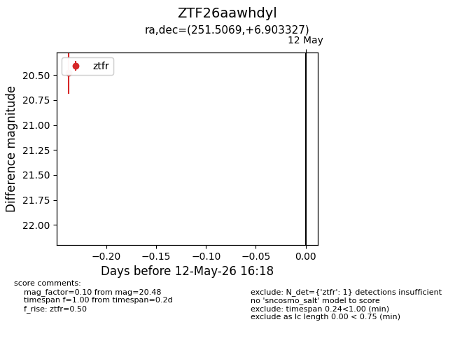
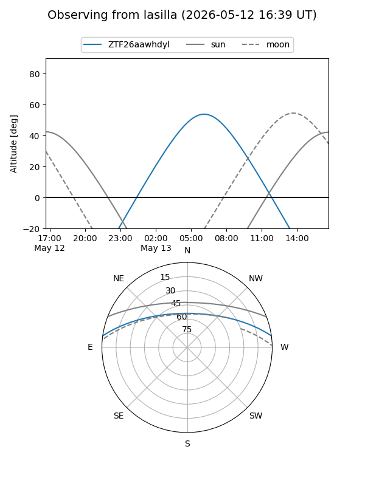
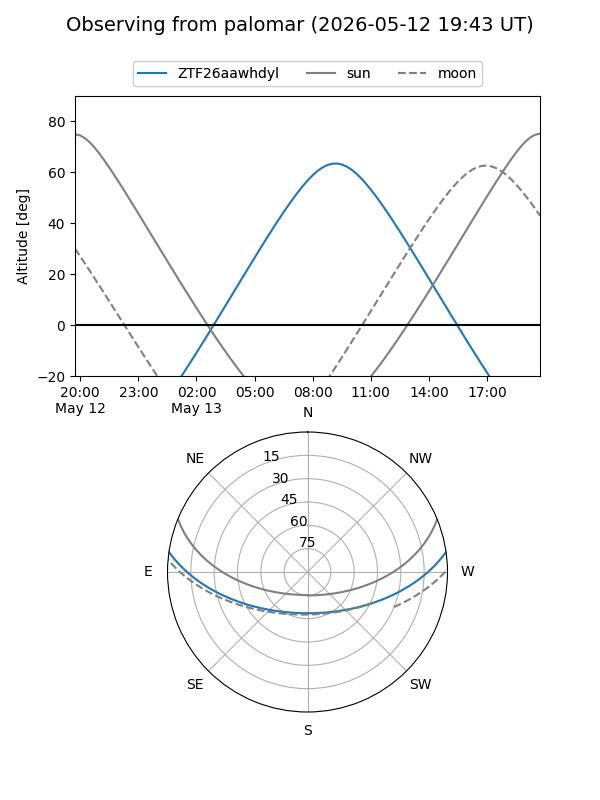

ZTF26aawhdyl
Target ZTF26aawhdyl at 2026-05-12 16:20
Aliases and brokers:
FINK: link
Lasair: link
ALeRCE: link
alt names
ZTF26aawhdyl (ztf,fink_ztf)
Coordinates:
equatorial (ra, dec) = 251.5069,+6.90333
equatorial (HMS+DMS) = 16:46:01.66,+06:54:11.98
galactic (l, b) = (24.3094,+30.96490)
Flags:
Photometry:
last ztfr=20.48
1 ztfr detections
Lightcurve

Visibility


Additional plots